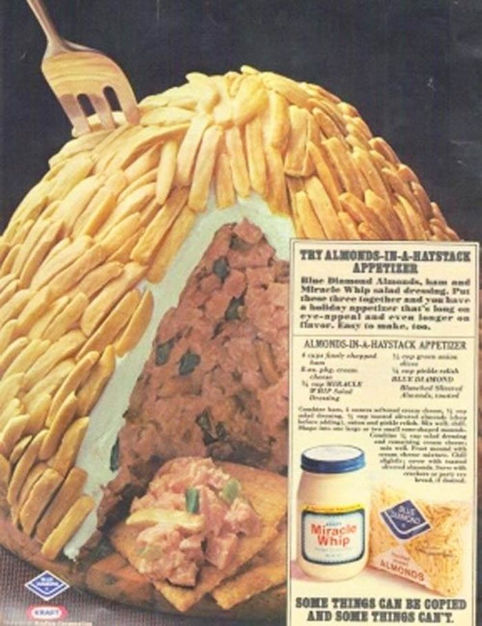

Almonds in a Haystack

A feat of awe and wonder. For example, I wonder if the person who was given
the job of creating a recipe with Miracle Whip and came up with this had no eyeballs
or tastebuds? I wonder how many people actually made and tried to eat this monstrosity?
We'll probably never know.
Only brave souls with no gag reflex nor fear of heart disease need proceed
to recreate and attempt to ingest this haystack-shaped hill of self-hatred.
- 4 cups finely chopped ham
- 8 oz. cream cheese
- 3/4 cup Miracle Whip
- 1/3 cup sliced green onions
- 1/4 cup pickle relish
- 1.5-2.5 cups slivered almonds, toasted
- Combine ham, 4 oz. cream cheese, 1/2 cup Miracle Whip, 1/2 cup toasted slivered
almonds (chopped), onion & pickle relish.
- Mix well until it looks like unidentifiable brown mush, then chill it in the fridge.
- Once cold, shape into 1 large mound ('haystack').
- Combine 1/4 Miracle Whip & remaining cream cheese. Mix well.
- Frost cold, hammy mound thickly with cream cheese mix.
- Chill slightly, then cover completely with slivered, toasted almonds.